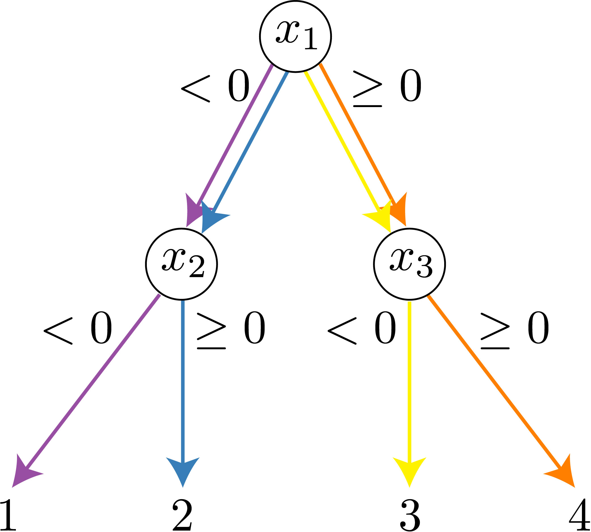

Overview
In this article, I explain an algorithm I developed from our paper called Interventional Tree Explainer (ITE). ITE is currently the default algorithm for explaining trees in the popular SHAP package. Although ITE is described in our paper, my goal here is to provide a clear and easy to understand overview of the algorithm. In this article, I aim to explain SHAP values, how ITE connects to other SHAP methods, and the technical aspects of ITE from the ground up.
As an overview, I will first define the problem we aim to solve with ITE by describing SHAP values (Background Section), a local feature attribution with desirable properties. In general, computing SHAP values exactly is NP-hard. If we focus on explaining tree-based models (e.g., XGBoost, decision trees, random forests, etc.), we can arrive at a naive polynomial time algorithm. Leveraging dynamic programming, we can then modify the algorithm to run in linear time (Algorithm Section).
1. Background
1.1 Shapley values
Shapley values are a concept from cooperative game theory to spread credit among players \(N=\{1,\cdots,d\}\) in a coalitional game \(v(S):2^d\to\mathbb{R}^1\), where \(S\) is a subset of \(N\).
As an example, let's imagine a company makes a profit \(v(S)\) dollars in 2020, determined by what combination of individuals \(S\) they employ in 2020. Furthermore, let's assume we know \(v(S)\) for all possible combinations. Then, the Shapley values assign credit to an individual \(i\) by taking a weighted average of how much the profit increases when \(i\) works together with all possible subsets (combinations) of the remaining individuals: $$ \overbrace{\phi_i(v)}^{\text{Shapley value of player }i}=\sum_{S\subseteq \underbrace{N\setminus\{i\}}_{\text{Remaining individuals}}}\overbrace{\frac{|S|!(|N|-|S|-1)!}{|N|!}}^{\text{Weight }W(|S|,|N|)}(\overbrace{v(S\cup\{i\})-v(S)}^{\text{Profit individual }i\text{ adds}}) $$ The Shapley values consider how much an individual increases profit when they work together with all other possible teams. Furthermore, they are a unique solution to spreading credit under several desirable axioms. In this article I won't delve into why Shapley values are desirable, but if you are interested here are a few resources...
1.2 SHAP values
SHAP values are a variant of Shapley values designed to explain ML models. For SHAP values, the game \(v(S)\) is now related to a machine learning model \(f(x)\) and the set of players is now a feature vector \(x\in\mathbb{R}^d\).
Previously, for Shapley values the game's output \(v(S)\) was the value of the game with the players in \(S\) "present" and the remaining players "missing". For \(v(S)\), "missing" is naturally defined: whether or not a player \(i\) is present in the set \(S\) (or, as in our example, whether an employee was working for the company in 2020).
In comparison, ML models generally require a fixed length input which makes setting features to be "missing" or "present" less straightforward. One natural way to do this is with a conditional expectation. In words, the value of the game is the expected value of the model if we condition on a set of features that are "present". If we define \(D\) to the background (underlying) distribution \(x\) is drawn from, then: $$ v(S)=\mathbb{E}_\mathcal{D}[f(x)|x_{S \cup \{i\}}] $$ One caveat is that modelling the conditional expectation is very difficult. Further, even if you do perfectly obtain the conditional expectation, the correlations you capture may cause you to attribute to features your model is not truly "using". Although explaining relationships by modelling the conditional expectation may be desirable for some use cases, our goal is to explain the model itself; therefore, an arguably more natural approach is to use causal inference's interventional conditional expectation: $$ v(S)=\mathbb{E}_\mathcal{D}[f(x)|\text{do}(x_{S \cup \{i\}})] $$ The motivation for this interventional conditional expectation comes from \cite{janzing2019feature} which is also very close to Random Baseline Shapley in \cite{sundararajan2019many}). Additionally, this is exactly the assumption made by Kernel Explainer and Sampling Explainer from the SHAP package.
1.3 SHAP values with a background distribution
As we saw earlier, we need to evaluate the interventional conditional expectation to compute \(\phi_i(f,x)\). The interventional conditional expectation depends on a background distribution \(D\) that our foreground sample \(x\) is compared against to compute the SHAP value.
One natural definition of the background distribution is a uniform distribution over a population sample. For instance, in machine learning, you could assign equal probability to every sample in your training set. With this background distribution, we can re-write the SHAP value as an average of single reference SHAP values: $$ \phi_i(f,x)=\frac{1}{|D|}\sum_{\hat{x}\in D}\phi_i(f,x,\hat{x}) $$
In words, we reduce the more complicated problem of obtaining \(\phi_i(f,x)\) to an average of much simpler problems \(\phi_i(f,x,\hat{x})\) where our foreground sample \(x\) is compared to a background distribution \(D\) with only one background sample \(\hat{x}\).
2. Algorithm
Now our goal is to tackle the simpler problem of obtaining single reference SHAP values \(\phi_i(f,x,\hat{x})\).
2.1 Brute force
The brute force approach would be to compute the following: $$ \phi_i(f,x,\hat{x})=\sum_{S\subseteq N\setminus\{i\}} \underbrace{W(|S|,|N|)}_{W}\underbrace{f(\mathcal{X}(x,\hat{x},S\cup \{i\}))}_{\text{\textcolor{green}{Pos} term}} {-} \underbrace{f(\mathcal{X}(x,\hat{x},S)}_{\text{\textcolor{red}{Neg} term}}) $$ If the cost of computing the weight \(W\) is constant, then the computational complexity of the brute force method is the number of terms in the summation times the cost of making a prediction \(f(x)\) (likely on the order of the depth of the tree \(O(D)\)). Since we consider two terms (\(\text{\textcolor{green}{Pos}}\) and \(\text{\textcolor{red}{Neg}}\)) for all possible combinations of the full set of features (without \(i\)), the computational complexity is \(O(D\times2^{d})\). Finally, the computational complexity to compute \(\phi_i(f,x,\hat{x})\) for all features is \(O(|N|\times D\times 2^{d})\).
However, if we constrain \(f(x)\) to be a tree-based model (e.g., XGBoost, decision trees, random forests, etc.), then we can come up with a simple polynomial time algorithm to compute \(\phi_i(f,x,\hat{x})\) exactly. In the following section we discuss an example to provide intuition as to why.
2.2 An Example
| \(x_1\) | \(x_2\) | \(x_3\) | \(x_4\) |
|---|---|---|---|
| \(-1\) | \(2\) | \(-3\) | \(-4\) |
| \(\hat{x}_1\) | \(\hat{x}_2\) | \(\hat{x}_3\) | \(\hat{x}_4\) |
|---|---|---|---|
| \(1\) | \(-2\) | \(3\) | \(4\) |
In this section, we will focus on the tree in Figure 1. First of all, we can examine a brute force approach to explain feature \(1\) with \(x=[-1,2,-3,-4]\) and \(\hat{x}=[1,-2,3,4]\).
In Table 1, each row corresponds to a combination \(S\) in the brute force summation. In addition, we report the hybrid features \(h_i\) that are taken from either \(x\) and \(\hat{x}\). The weight \(W\) is based on the size of \(S\) and the \(\text{\textcolor{green}{Pos}}\) and \(\text{\textcolor{red}{Neg}}\) terms correspond to \(f(\mathcal{X}(x,\hat{x},S\cup \{i\}))\) and \(f(\mathcal{X}(x,\hat{x},S))\) respectively.
We color \(h_1\) to be green if it came from \(x\) and red if it came from \(\hat{x}\), because if \(h_1\) is from \(x\) it corresponds to the \(\text{\textcolor{green}{Pos}}\) term and if \(h_1\) is from \(\hat{x}\) it corresponds to the \(\text{\textcolor{red}{Neg}}\) term.
| \(S\) | \(\textcolor{green}{h_1}\) | \(\textcolor{red}{h_1}\) | \(h_2\) | \(h_3\) | \(h_4\) | \(W\) | \(\text{\textcolor{green}{Pos}}\) | \(\text{\textcolor{red}{Neg}}\) |
|---|---|---|---|---|---|---|---|---|
| \(\{\}\) | \(-1\) | \(1\) | \(-2\) | \(3\) | \(4\) | \(1/4\) | \(1\) | \(4\) |
| \(\{2\}\) | \(-1\) | \(1\) | \(2\) | \(3\) | \(4\) | \(1/12\) | \(2\) | \(4\) |
| \(\{3\}\) | \(-1\) | \(1\) | \(-2\) | \(-3\) | \(4\) | \(1/12\) | \(1\) | \(3\) |
| \(\{2,3\}\) | \(-1\) | \(1\) | \(2\) | \(-3\) | \(4\) | \(1/12\) | \(2\) | \(3\) |
| \(\{4\}\) | \(-1\) | \(1\) | \(-2\) | \(3\) | \(-4\) | \(1/12\) | \(1\) | \(4\) |
| \(\{2,4\}\) | \(-1\) | \(1\) | \(2\) | \(3\) | \(-4\) | \(1/12\) | \(2\) | \(4\) |
| \(\{3,4\}\) | \(-1\) | \(1\) | \(-2\) | \(-3\) | \(-4\) | \(1/12\) | \(1\) | \(3\) |
| \(\{2,3,4\}\) | \(-1\) | \(1\) | \(2\) | \(-3\) | \(-4\) | \( 1/4\) | \(2\) | \(3\) |
Observation 1: We can ignore variables that are not present in the tree. This is particularly useful for tree ensemble methods where each tree in the ensemble may be small, but the overall number of features is large.
In particular, the value of \(h_4\) does not influence the tree or summation. We can collapse the top and bottom half of Table 1 by summing \(W\) and keeping \(\text{\textcolor{green}{Pos}}\) and \(\text{\textcolor{red}{Neg}}\) values:
| \(S\) | \(\textcolor{green}{h_1}\) | \(\textcolor{red}{h_1}\) | \(h_2\) | \(h_3\) | \(W\) | \(\text{\textcolor{green}{Pos}}\) | \(\text{\textcolor{red}{Neg}}\) |
|---|---|---|---|---|---|---|---|
| \(\{\}\) | \(-1\) | \(1\) | \(-2\) | \(3\) | \(1/3\) | \(1\) | \(4\) |
| \(\{2\}\) | \(-1\) | \(1\) | \(2\) | \(3\) | \(1/6\) | \(2\) | \(4\) |
| \(\{3\}\) | \(-1\) | \(1\) | \(-2\) | \(-3\) | \(1/6\) | \(1\) | \(3\) |
| \(\{2,3\}\) | \(-1\) | \(1\) | \(2\) | \(-3\) | \(1/3\) | \(2\) | \(3\) |
Observation 2: The number of \(\text{\textcolor{green}{Pos}}\) and \(\text{\textcolor{red}{Neg}}\) terms we need to calculate is equal to the number of leaves in the tree. We color each term in Table 2 to illustrate which path in Figure 2 corresponds to each term. Then, we can collapse the terms in Table 2 based on these paths to obtain Table 3.
to terms in Table 3.

| \(S\) | \(\textcolor{green}{h_1}\) | \(\textcolor{red}{h_1}\) | \(h_2\) | \(h_3\) | \(W\) | \(\text{\textcolor{green}{Pos}}\) | \(\text{\textcolor{red}{Neg}}\) |
|---|---|---|---|---|---|---|---|
| \(\{\}\) | \(-1\) | \(-2\) | \(3\) | \(1/2\) | \(1\) | ||
| \(\{2\}\) | \(-1\) | \(2\) | \(3\) | \(1/2\) | \(2\) | ||
| \(\{\}\) | \(1\) | \(-2\) | \(3\) | \(1/2\) | \(4\) | ||
| \(\{3\}\) | \(1\) | \(-2\) | \(-3\) | \(1/2\) | \(3\) |
Intuition: Drawing on this observation, we can intuitively see that each path in the tree will correspond to one of the \(\text{\textcolor{green}{Pos}}\) or \(\text{\textcolor{red}{Neg}}\) terms we need to calculate. In the next section, we will discuss a naive algorithm to obtain these terms.
2.3 Naive Implementation
Theorem 1: To calculate \(\phi_i(f,x,\hat{x})\), we can calculate contributions for each path from the root to each leaf. For a given path \(P\), we define \(N_P\) to be the "unique" features encountered and \(S_P\) to be the "unique" features that came from \(x\). Finally, define \(v\) to be the value of the path's leaf. Then, the contribution of the path is: $$ \phi_i^P(f,x,\hat{x})= \begin{cases} 0 & \text{if}\ i\notin N_P \\ W(|S_P|-1,|N_P|)\times v & \text{if}\ i\in S_P \\ -W(|S_P|,|N_P|)\times v & \text{o.w.} \end{cases} $$
Then the goal of the algorithm is to obtain \(N_P\) and \(S_P\) for each path by doing recursively doing a pre order traversal of the tree. We will start by explaining the algorithm via an example:
In the final algorithm, maintain a list of \(N_P\) and \(S_P\) as we traverse paths. We will do a bit of work at each node to update the lists depending on a number of cases. In Figure 3, we can see these cases for each node \(n\) that splits on a feature \(n_{feature}\):
- Case 1: At a leaf. Compute the contribution in Theorem 1 based on the \(N_P\) and \(S_P\) that land at each leaf.
- Case 2: The feature has been encountered in the path previously. In this example's path, \(x_1\) was already split on at the root of the tree and it went the direction of \(x'\). This means we add nothing to \(N_P\) and \(S_P\) because we have already encountered this feature and traverse down the appropriate path associated with \(x'\).
- Case 3: Both \(x\) and \(x'\) are on the same side of the threshold. In this case, we again don't add to \(N_P\) and \(S_P\) because relative to our foreground and background samples, there is no difference.
- Case 4: \(x\) and \(x'\) go to different children. In this case, we add \(n_{feature}\) to both \(N_P\) and \(S_P\) for the \(x\) path. For the \(x'\) path, we only add \(n_{feature}\) to \(N_P\).
ITE_N(array \(x\), array \(\hat{x}\), tree \(T\)):
-
RECURSE(node \(n\), list \(S_P\), list \(N_P\), array \(x\), array \(\hat{x}\)):
-
// Case 1: At a leaf
if n is a leaf:
-
return \(\phi_i^P(f,x,\hat{x})\) based on \(S_P\) and \(N_P\) (Theorem 1)
\(x_{child} =\) \(n_{leftchild}\) if \(x[n_{feature}] < n_{threshold}\) else \(x_{child}\) = \(n_{rightchild}\)
\(\hat{x}_{child} =\) \(n_{leftchild}\) if \(\hat{x}[n_{feature}] < n_{threshold}\) else \(\hat{x}_{child}\) = \(n_{rightchild}\)
// Case 2: Feature was encountered previously
if \(n_{feature}\in N_P\):
-
if \(n_{feature}\in S_P\):
-
return ITE_N(\(x_{child}\),\(S_P\),\(N_P\),\(x\),\(\hat{x}\))
-
return ITE_N(\(\hat{x}_{child}\),\(S_P\),\(N_P\),\(x\),\(\hat{x}\))
if \(x_{child}==\hat{x}_{child}\):
-
return ITE_N(\(x_{child}\),\(S_P\),\(N_P\),\(x\),\(\hat{x}\))
if not \(x_{child}==\hat{x}_{child}\):
-
return ITE_N(\(\hat{x}_{child}\),\(S_P\),\(N_P+[n_{feature}]\),\(x\),\(\hat{x}\)) +
ITE_N(\(x_{child}\),\(S_P+[n_{feature}]\),\(N_P+[n_{feature}]\),\(x\),\(\hat{x}\))
Computational complexity to compute \(\phi_i(f,x,\hat{x})\) for all features is \(O(|N|\times T_{numnodes}\times T_{depth})\) where \(T_{numnodes}\) is the number of nodes in the tree and \(T_{depth}\) is the depth of the tree. Note that we can actually get rid of the multiplicative \(T_{depth}\) factor by simply being more clever with the data structures we use to represent \(S_P\) and \(N_P\). Using this in conjunction with a dynamic programming observation, we can compute all attributions for all features in linear time in the next section.
2.4 Dynamic Programming Implementation
Using something akin to the collapsibility we observed in our example, we can actually just compute the attributions for all features simultaneously by assigning credit to features based on the feature split on at each node in the tree. We do a similar algorithm to the one above, except we pass \(\textcolor{green}{\text{Pos}}\) and \(\textcolor{red}{\text{Neg}}\) contributions upstream and use them for each feature we encounter.
| Feature | \(\phi_i(f,x,x')\) |
|---|---|
| \(x_1\) | \(\textcolor{green}{\text{Pos}}_1+\textcolor{green}{\text{Pos}}_2+\textcolor{red}{\text{Neg}}_3+\textcolor{red}{\text{Neg}}_4\) |
| \(x_2\) | \(\textcolor{red}{\text{Neg}}_1+\textcolor{green}{\text{Pos}}_2+\textcolor{green}{\text{Pos}}_3+\textcolor{red}{\text{Neg}}_4\) |
In Figure 4, we can look at the attributions for \(x_1\) and \(x_2\). First we can observe that for each leaf, according to Theorem 1, there are only two possible values to compute (what we have been calling \(\textcolor{green}{\text{Pos}}\) and \(\textcolor{red}{\text{Neg}}\)). Based on the attributions for each feature we can see that the positive and negative terms can be grouped for \(x_1\)by the left and right subtrees. This observation generalizes well and allows us to do a constant amount of work at every node by grouping positive and negative terms and passing them up the tree.
ITE_D(tree \(t\), array \(x\), array \(\hat{x}\)):
-
\(\phi=\) [0]*\(len(x)\)
RECURSE(node \(n\), int \(S^c\), int \(N^c\), array \(x_a\), array \(\hat{x}_a\)):
-
// Case 1: At a leaf
if \(n\) is a leaf:
-
if \(U==0\): return (0,0)
else: return (\(W(S^c,N-1)\times n_{value}\),\(-W(S^c,N^c)\times n_{value}\))
\(x_{child} =\) \(n_{leftchild}\) if \(x[n_{feature}] < n_{threshold}\) else \(x_{child}\) = \(n_{rightchild}\)
\(\hat{x}_{child} =\) \(n_{leftchild}\) if \(\hat{x}[n_{feature}] < n_{threshold}\) else \(\hat{x}_{child}\) = \(n_{rightchild}\)
// Case 2: Feature was encountered previously
if \(x_a[n_{feature}]>0\):
-
return RECURSE(\(x_{child}\),\(S^c\),\(N^c\),\(x_a\),\(\hat{x}_a\))
-
return RECURSE(\(\hat{x}_{child}\),\(S^c\),\(N^c\),\(x_a\),\(\hat{x}_a\))
if \(x_{child}==\hat{x}_{child}\):
-
return RECURSE(\(x_{child}\),\(S^c\),\(N^c\),\(x\),\(\hat{x}\))
\(X_a =\) copy(\(x_a\)); \(X_a[n_{feature}]=X_a[n_{feature}]+1\)
\(\hat{X}_a =\) copy(\(\hat{x}_a\)); \(\hat{X}_a[n_{feature}]=\hat{X}_a[n_{feature}]+1\)
if not \(x_{child}==\hat{x}_{child}\):
-
\(pos_x,neg_x=\) RECURSE(\(x_{child}\),\(S^c+1\),\(N^c+1\),\(X_a\),\(\hat{x}_a\))
\(pos_{\hat{x}},neg_{\hat{x}}=\) RECURSE(\(\hat{x}_{child}\),\(S^c\),\(N^c+1\),\(x_a\),\(\hat{X}_a\))
\(\phi[n_{feature}]=\phi[n_{feature}]+pos_{x}+neg_{\hat{x}}\)
return (\(pox_{x}+pox_{\hat{x}}\),\(neg_{x}+neg_{\hat{x}}\))
Computational complexity to compute \(\phi_i(f,x,\hat{x})\) for all features is now just \(O(T_{numnodes})\) where \(T_{numnodes}\) is the number of nodes in the tree.
In the package, we actually re-implemented this algorithm iteratively which should be faster and more memory efficient than the recursive version. We won't cover the iterative version here, because the pseudocode would be much less comprehensible.
Additionally, to compute the \(\phi_i(f,x)\), you need to compute \(\phi_i(f,x,x')\) for many references. In practice, using a fixed number of about 100 to 1000 are good sizes to use.